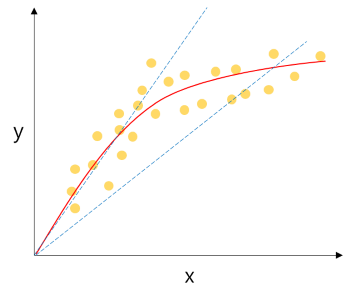
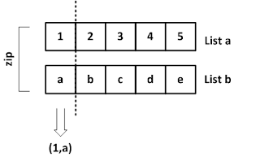

인공지능: 컴퓨터 시스템이 인간과 유사한 지능적 작업을 수행할 수 있는 능력을 가지는 지능
머신러닝 학습법
지도 학습
특정 기준에 의한 데이터들이 필요한 방식
분류
- 기준(레이블)으로 분류되어 학습한 후에 입력 데이터를 찾아 내는 법
이진분류: ex) 고양이 이냐 아니냐?다중분류: ex) 사자 호랑이 코끼리 중 어디?
회귀
- 예측값이 실(양적데이터) 일때 특성과 결과 사이의 관계파악 하여 결과를 예측하는법
- 키와 몸무게의 데이터가 주어졌다면 키로 대강의 몸무게가 예측이 가능할것
- 주택 가격 예측 같은것들
- K-NN (최근접 이웃)
- 선형회귀
- 다항회귀
- 의사결정 트리
비지도 학습
특정 기준에 의한 데이터들이 존재하지 않은방식
군집화
- 무작위에 데이터가 주어졌을때 그것들을 구분해서 그룹화 하는 것 데이터들에 특성을 고려 집단(클러스터)을 정의하고 대표점을 찾는 방식
- 예) 한 택배 회사에서 받은 물류들을 분류하는것
- K-means(평균)
- DBSCAN(밀도기반)
강화 학습
- 보통 우리가 생각하는 딥러닝 어떤 게임을 한다고 쳤을 때, 특정 상태 에서 어떤 행동을 취하는 것이 최적인지를 학습하는 것이다.
머신러닝 프로세스
- 문제파악
- 데이터 탐색
- 데이터 전처리
- 모델 학습
- 예측
K-NN 분류 (최근접 이웃)
예측할 데이터가 위치하는 곳에 가까운 이웃에 데이터를 비교하는 방식
특징
- 학습시 api 는
KNeighborsClassifier - K값에 따라 이웃 개체를 K개 찾았을 때 어떤 데이터가 더 많은지 비교, 따라서 K값은 홀수로 둬야 함 (동점이 존재하니까)
- 유클리드 거리 방식
유클리드: 피타고라스 대각선 거리맨하튼거리: 각 좌표에 차를 모두 더한 것
- 구현이 쉽고 훈련이 빠르다
- 데이터가 많아지면 분류(예측) 단계에서 시간이 많이 걸리고 메모리가 많이 필요 적절한 K의 선택이 필요
사용법
- 여기서
fish_data는 전체 데이터를 의미하고fish_target은 실제 분류된 결과를 의미 - 학습 과정
# 모든 생선의 길이, 무개 값 저장 도미 35마리 빙어 14마리
fish_data = [[len, weight] for len, weight in zip(length, weight)]
# 도미를 1로 빙어를 0으로 설정
fish_target = [1] *35 + [0] *14
from sklearn.neighbors import KNeighborsClassifier
kn = KNeighborsClassifier() # K_NN 모델 생성 : 기본으로 생성
# n_neighbors=3 이걸로 K값 조정
kn.fit(fish_data, fish_target) # 학습
# 인자로 데이터, 결과를 넘겨주는 것
kn.score(fish_data, fish_target) # 성능평가
[새로운 예측]
# 분류라서 1 또는 0
ans = kn.predict([[30 ,600]])
if ans == 1:
print("도미입니다.")
else:
print("빙어입니다")예측 확률
predict 가 예측 결과를 출력할때 그 예측을 한 확률
kn.classes_: 학습 결과로 얻어 정답(타겟값 출력)kn.predict_proba(테스트 셈플들): 샘플에 대한 예측 확률 구하기
K-NN 회귀 (최근접 이웃)
이웃들에 평균치로 계산
특징
- 학습 시 api는
KNeighborsRegressor 결정계수:- 회귀 모델에서 성능평가 지수
평균 절대값 오차 (MSE)
타겟에서에측값을 뺀값을 절대값으로 바꿔 평균을 낸것예측값과타겟이 얼마나 차이나는지 알 수 있다mean_absolute_error(예측값, 타겟): 함수로 바로 구할 수 있음
데이터 전처리
- 거리기반 알고리즘이라 범위 영향을 많이 받음
- 따라서 표준점수(
(값-평균) / 표편) 기준을 잡는게 좋음mean(): 평균std(): 표준편차
train_scaled =(train_input - mean) / std
# train_scaled에 있는 모든 값을 표준점수로 바꿔줌선형 회귀
특성이 하나인 경우
특성과타겟간 관계를 잘 나타내는 직선을 예측
특징
- 학습 시 api는
LinearRegression - 1차 함수 형태이므로
기울기,절편값이 필요기울기: coef_절편: intercept_
# 찾아낸 기울기와 절편으로 1차 방정식 그래프 그리기 : x의 범위는 15에서 50까지
plt.plot([15, 50], [15*lr.coef_+lr.intercept_, 50*lr.coef_+lr.intercept_])단순 선형 회귀
데이터와 한 개의 특성의 선형 상관관계를 모델링하는 회귀분석 기법
데이터 = a*특성 + b꼴
특징
- 가장기초, 많이 사용됨
- 입력값(특성) 이 하나 인 경우 작동
- 키가 몸무게의 영형을 얼마나 주나 뭐 이런거
- 이때
키는 독립변수x,몸무게는 종속변수y
손실함수
실제값과 예측값에 차이를 나타내는 함수 (평균 절대값 오차) 그냥 오차값이라 생각하자
최소 제곱법: 오차값의 제곱에 합이 최소가 되는a,b를 구하는 방법 2차함수 형태, 미분하여 기울기가 0이되는 지점을 구하면 됨경사 하강법: 위a,b값을 직접 구하는 방식a,b값을 적절히 조절하여 오차가 최소가 되는 지점을 찾는 법이게 제일 많이 사용되는데 왜냐면 실제 손실함수는 미분으로 할 수 없는 난잡성을 보이는 경우가 많음 그래서 이부분은 수동으로 해주는 게
다항 회귀
단순한 1차원 직선으로 관계예측이 일어나기 힘든경우 즉 완전 비례, 반비례 관계가 아닌경우, 에초에 거의 모든 데이터는 완전 비,반비례 관계를 가지기 어렵다.
특징
- 사실상 다중회귀에 일종
- 특성값에 변형을 줘서 다른 특징을 만들어 내는것
- 1차 곡선 형태의 그래프

𝑦= 𝑎x^2+𝑏𝑥+𝑐꼴에 식a,b: 가중치, 계수,c: 절편
- 차수(차원)수가 늘어나면
𝑦= 𝑎x^n+...+𝑏𝑥+𝑐
- 교제에 나온건 column_stack() 함수를 사용하여 첫 인자에 원본 데이터 제곱
해서 훈련,
predict([[예측제곱값, 예측값]])로 예측무게 = 1.01 * 길이^2 - 21.6*길이+116.05
다중 회귀
데이터와 여러개의 특성(입력값)에 대한 결과 예측을 위한것 예) 평균기온, 강수량 → 아이스크림 판매량
특징
- 특성이 여러개 이므로 2, 3 차원의 형태
- 특성이 타겟을 넘지않아야 한다
특성공학 & 규제
PolynomialFeatures()
- 각 특성을 제곱한 항과 특성끼리 서로 곱한 항을 추가할 때 사용
- 자동으로 다항 특성 만드는 클래스
degree=2: 차수 (2차원 곡선이면2, 3차원이면3)include_bias=True: 0차항 포함여부 (편향, 절편)transform(): 실제로 데이터에 적용하여 특성추가fit(): 생성할 특성 조합 찾기
fit()다음transform()이렇게 처리해야 하고 transform 된 데이터를 LinearRegression() api 에 집어넣으면 됨- 다항, 다중 회귀에 사용
- 보통 bias 값은 1일텐데 그 이유는 선형 방정식에 절편값은 1이라 근데 보통 자동으로 추가해줘서
include_bias=False추천
특성공학
-
머신러닝 모델의 성능을 향상 시키기 위해 데이터의 특성을 만들거나 변형하는 과정
특성선택: 가지고 있는 특성 중에서 훈련에 가장 유용한 특성 선택특성추출: 특성을 결합하여 더 유용한 특성을 만듬차원축소: 특성의 개수를 줄이는 것
-
StandardScaler(표준화): 각 특성을 평균 0, 분산 1로 스케일링 -
MinMaxScaler(정규화): 각 특성의 값을 0~1 사이값으로 -
OneHotEncoder(이산화): 범주형 데이터의 숫자형 변환
규제
- 훈련세트를 너무 과도하게 학습하지 못하도록 제한
- alpha 값을 조정할 때 상용로그 값으로 취함
그래프 그릴 땐
np.log10()함수로 로그 값을 구해서 - alpha 값으로 규제 강도를 조정하고 적당한 alpha 값을 찾는것이 중요하다
선형회귀: 각 항의 계수(가중치, 계수, 기울기)가 너무 커지지 않도록분류: 하이퍼 파라미터 조정
여기서 계수는 편향, 절편을 의미
릿지(Ridge)
- 계수를
제곱한 값을 기준으로 규제 적용 - 회귀 계수를 작게
사용법
Ridge(alpha=1)api 사용- 이외 다른 과정은 다른 ML api 와 동일하다
라쏘(Lasso)
- 계수의
절대값을 기준으로 규제 적용 - 회귀 계수값을 0으로 하거나 적게
- 예측영향이 적은 특성에 회귀계수를 0으로 해당 특성을 학습에서 제외
사용법
lasso(alpha=1)api 사용- 이외 다른 과정은 다른 ML api 와 동일하다
coef_: 학습 결과로 찾아낸 게수를 저장, 이때 0이면 그 값은 제외된거
표준화
StandardScaler 클래스 사용
ss = StandardScaler()
ss.fit(train_poly)
train_scaled = ss.transform(train_poly)- 규제 api 사용시에는 반드시 표준화를 거친 데이터값을 사용
lasso.fit(train_scaled, test_data)
데이터 처리
성능 하락 요인
과대적합: 훈련 성능 ▲ 테스트 데이터 ▼- 일반성 이 떨어진다는 의미
과소적합: 훈련 성능 ▼ 테스트 데이터 ▲- 모델이 너무 단순해서 제대로 학습이 안됬다는 의미
- 대표성 없는 데이터
- 낮은 품질 데이터
- 충분하지 않는 데이터
- 관련성 없는 특성
데이터 종류
양적 데이터: 숫자 데이터, 얼마나 크고 작은지면적, 온도, 판매량
범주형 데이터: 이름데이터계절, 날씨
데이터 전처리
- 이상치 제거
- 결측치 처리
- 데이터 변환
- 표준화, 정규화, 이산화, 범주화
특성공학
특성 선택: 가지고 있는 특성중 가장 유용한 특성 선택특성 추출: 특성을 결합해 더 유용한 특성 만듬차원 축소: 특성의 개수 줄이기
용어정리
머신러닝(기계학습): 여러 개의 입력값과 결과값을 컴퓨터에 제공하기만 하면 이 데이터를 바탕으로 컴퓨터가 스스로 내부 동작을 만들어 내는것모델: 머신러닝 알고리즘을 구현한 프로그램 또는 데이터 간의 상관관계를 수식으로 표현하는 것성능평가: 실제값과 모델에 의해 예측 값을 비교하여 두 값의 차이를 구하는것실제값-예측값샘플링 편향: 훈련 데이터 세트와 테스트 세트 간에 편중파라미터: 새로운 샘플에 대한 예측을 하기위해 사용하이퍼 파라미터: 모델에 설정하는 변수 학습률, 에보크수(훈련 반복횟수), 가중치 초기화 등을 결정모델 파라미터: 모델 훈련에 결과로 얻어지는 값들
손실함수: 예측값과 실제값에 차이 즉, 오차를 계산하는 함수사례기반 학습: 훈련 샘플을 암기하며 학습스팸 메일 필터 (KNN)
모델기반 학습: 샘플들에 모델을 만들어 예측해서 사용하는 것GDP에 따른 더 나은 삶의 지표 변화 예측 (선형 회귀)
함수정리
axis=1: 행,axis=0: 열len(): 리스트나numpy배열 길이 출력zip(): 메게변수로 주어진 리스트에서 항목을 각각 꺼내 튜플로 
Numpy, Pandas 정리
- 리스트 컴프리션 ex) 리스트 원소에 2배를 곱하는
x2 = [ n*2 for n in x ]
x2
# 연산 for 변수 in 참조값 - numpy 배열은 백터연산이 되서 해당 코드로도 위 결과와 같은 효과를 냄
xa * 2- 브로드 케스팅 (차수 달라도 연산되게)
a = array([[1, 2], [3, 4], [5, 6]])
b = array([10, 20])
a * b = array([[10, 40], [30, 80], [ 50, 120]])Sklearn
fit(데이터, 타겟): 학습score(데이터, 타겟): 성능평가predict([ [ 값 ] ]): 예측하기train_test_split(데이터, 타겟, train_test_split=): 훈련데이터 세트와 테스트 데이터 세트 나눠주기random_state=: 랜덤시드stratify=데이터: 해당 데이터와 비율을 맞춤
kneighbors([[ 값 ]]): distances, indices: 최근접 이웃 항목 반환distances: 이웃과에 거리데이터indices: 최근접 이웃들의 인덱스
train_test_split(): 훈련데이터와 테스트 데이터 세트로 나누어줌
train_input, test_input, train_target, test_target = train_test_split(fish_data, fish_target, random_state=42)
#random_state 랜덤 시드 설정Numpy
astype(): 타입 변환column_stack(([1,2,3], [4,5,6])):
[이런식으로 반환]
array([[1, 4],
[2, 5],
[3, 6]])random.shuffle(index): 랜덤값 배열 생성 (주로 샘플링 편향 해소에 사용)isin(['칼럼']) -> [True | False]: 해당 칼럼만 선택
Dataframe
tail()끝 값 5개 출력iloc[행, 열]: 특정행렬만loc[행값 , ["행키"]]: 행키를 가진 행값열 까지